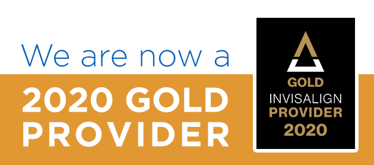

Meet the Team

Caixia Lan DMD
Dr. Lan and her team are passionate about helping patients achieve optimal dental health through
patient
education and prevention. Dr. Lan’s priority is achieving lasting oral heath which starts by
listening to you,
the patient, and what your smile goals are. She is dedicated to each of her patients’ smiles
with a simple
philosophy; treat patients as if they were her own family.
Dr. Lan received her first dental degree in Shanghai, China. Upon moving to the United States,
she advanced her
dental education from the University of Boston where she graduated with honors. After moving to
the Seattle area
with her family three years ago, Dr. Lan has found her dental family with Redmond Way Dentistry
and our
wonderful patients. In her free time, she enjoys hiking the beautiful northwest trails, skiing,
and discovering
new restaurants.
Fluent languages to help patient communication: English, Mandarin, and Taiwanese.
Frank Rho DDS

Dr. Rho offers 25 years of experience in general and advanced dentistry. He has dedicated his
career to learning
the most advanced dental techniques available with an overall focus of customized function and
optimum oral
health through general dentistry, dental Implants, orthodontics, cosmetic dentistry and full
mouth
reconstruction. You are the patient. Each person has different dental goals with individual
needs. This is where
Dr. Rho finds his years of experience and skill level most helpful to his patients. Your dental
needs can all be
treated in one place with one health-oriented goal you and Dr. Rho have co-collaborated on
together, achieving
your most optimum dental health and longevity.
Graduate of Loma Linda University School of Dentistry in 1997. After graduating, Dr. Rho advanced
his skill and
training to master Oral and Maxillofacial Surgery and Dental Implant placement. This training
level then led to
more comprehensive full mouth reconstruction options. Today, Dr. Rho has treated thousands of
happy patients in
his career, and he brings the entire scope of his experience, care and skill to you, with the
best options
dentistry has to offer efficiently and comfortably.
After several years away and owning his own practices, Dr. Rho has returned to Washington where
he grew up to be
closer to his family and live in the state, he always called home. In his opinion, there is
nowhere more
beautiful than the Pacific Northwest.
Malavika Prasanna DDS
Dr. Prasanna has a strong passion for restorative dentistry with a focus on communication and
collaboration with
her patients. This passion has allowed her to help her patients achieve their dental goals while
improving their
overall dental health. Dr. Prasanna has made it her personal goal to offer her patients the best
quality in
general dentistry available with a personalized relationship. As Dr. Prasanna says, “Each
patient becomes a part
of my family”.
Dr. Prasanna’s dental studies started with Government Dental College in Bangalore, India where
she was the top
dental student in Prosthodontics. After moving to the United States, she furthered dental
education with NYU
College of Dentistry. This experience led to her making Redmond her dental home and allowed her
to be part of a
great community to share her passion for dentistry and patient relations.
In her free time Dr. Prasanna is a loyal Seahawks fan, enjoys the local Seattle art and music
scene, and most
importantly spending time with her two children and family.